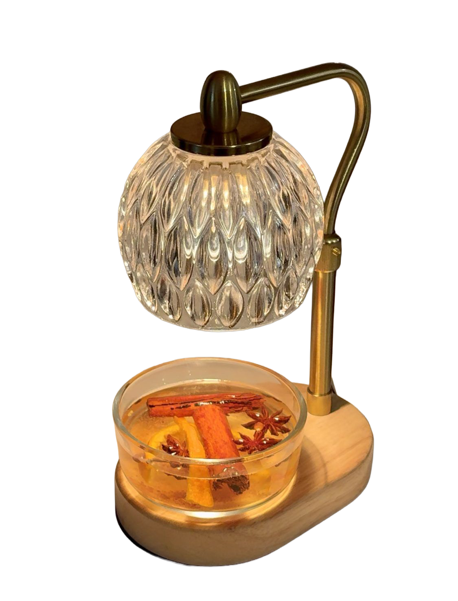

Personal Thoughts: I love a good candle, however, there is something so intimate about creating these little cauldrons of smells. It makes me feel like a little witch crafting spells that enchant my home with fragrances. The ritual of simmering these natural ingredients connects me to the season and transforms my space into a warm, inviting sanctuary.
About Simmer Pots: A simmer pot is a natural way to fill your home with pleasant aromas. It’s essentially stovetop potpourri made by simmering water with fresh ingredients like citrus fruits, berries, herbs, and whole spices. You can customize your simmer pot by combining fruits, herbs, spices, and extracts to create seasonal or personalized scents. Popular combinations include citrus with rosemary, or vanilla with lavender. Simmer pots can be made on the stovetop or in a slow cooker, and they can also double as a flavorful tea base using apple juice or wine. This simple, aromatic ritual brings warmth, coziness, and a sense of enchantment to your home.
